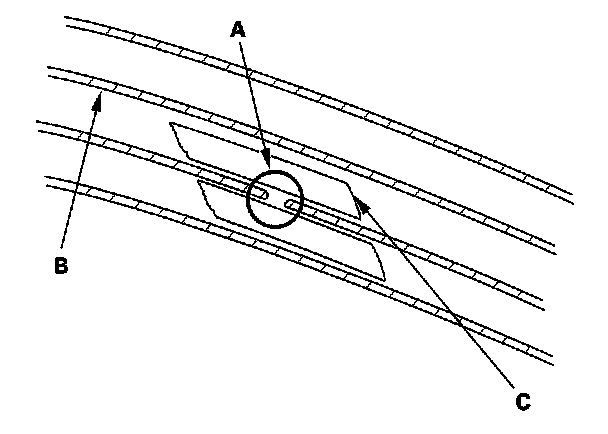
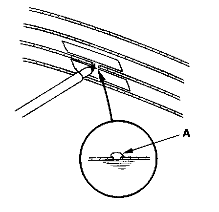

Heated Glass Element: Service and Repair
Defogger Wire RepairNOTE: To make an effective repair, the broken section must be no longer than 1 inch (25 mm).

1. Lightly rub the area around the broken section (A) with fine steel wool, then clean it with isopropyl alcohol.
2. Carefully mask above and below the broken portion of the defogger wire (B) with cellophane tape (C).

3. Using a small brush, apply a heavy coat of silver conductive paint (commercially available) extending about 1/8" on both sides of the break.
Allow 25 minutes to dry.
4. Perform the function test to confirm that the wire is repaired.
5. Apply a second coat of paint in the same way. Let it dry 3 hours before removing the tape.